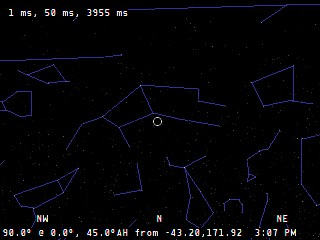

Nightsky
Nightsky is a very basic rendering of the stars in the sky for devices that aren't powerful enough to run Stellarium. It runs on The Ben NanoNote, which has only 32 MB of RAM and a 336 MHz MIPS CPU.
It's written in C and depends on SDL_image. It builds and runs on Linux but should be readily portable to other POSIX systems.

LIMITATIONS
- It renders only stars. The Sun and the planets are not shown
- The positions in the sky are slightly inaccurate
- It requires you to know your latitude and longitude
FEATURES
- Shows the brightest 10,000 or so stars in the sky
- The view can be zoomed in & out and panned around
- Optionally shows the constellations and their names
- Shows the configured location and time
- Shows common names of stars
GETTING STARTED
- Download the source from the SourceForge project page
- Build it
- Copy /usr/share/nightsky/example-nightsky.yml to ~/.nightsky.yml and edit it to reflect your location
- Run nightsky and press F1 to see the key bindings